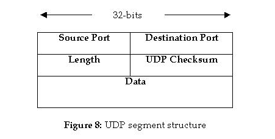
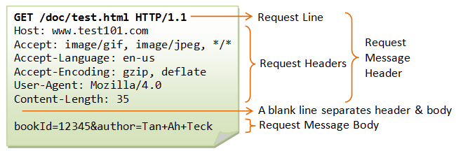

Computer Networks
General Comments
line switching vs. packet switching Leitungsvermittelte Netze vs. paketvermittelte Netze e.g. Telefon vs. Internet
Packet switching is either based on datagrams (connectionless) or on virtual connections.
TCP and UDP
The Internet Protocol (IP) specifies how Information is exchanged on the Internet between Routers and Hosts. (The path the information takes is the route).
The Transmission Control Protocol (TCP) and the User Datagram Protocol (UDP) on the other hand are used to exchange information between processes (not between hosts and routers) running on different hosts. So they both use port numbers to identify these processes.
So TCP and UDP are logically located on a higher communication layer (above IP).
TCP is connection oriented, byte stream based, if packets get lost they will be resent. UDP is a connectionless service without handshake mechanisms using datagrams.
Specifications
Structure of a TCP-Segment:

Establishing a TCP-Connection:
Synchronization Segments are being transmitted. Three ways handshake.
- Client: send SYN-Segment, with initial sequence number (client_isn)
- Server: send SYNACK-Segment, ACK Number: client_isn + 1, Seq Number: server_isn
- Client: send Segment with SYN-Bit 0, ACK Number: server_isn + 1
Structure of a UDP-Segment:

Sockets
- There are two kinds of sockets: Stream sockets (TCP), Datagram sockets (UDP).
- Sockets connect two devices. The are communication endpoints.
- Abstraction above the TCP layer.
Uniquely identified by
- ip address
- end-to-end protocol (TCP or UDP)
- port number
When you create a socket you get something like a file handle. The operations are different though.
As a client you connect to a server.
If your a server you listen, i.e. wait for clients, and accept to connect to a client.
Once you have a connection you can send and receive data (like write and read with a file).
Socket Operations
- socket (address_family, type, protocol) : Create a new endpoint, returns socket
- bind (sockid, &addrport, size) : Attach a local address to a socket
- listen (sockid, MAX_LENGTH) : Accept connections, non-blocking
- accept () : Block until request arrives, returns socket
- connect (sockid, &serverAdd, size) : Open connection to server (as a client), blocking
- send (sockid, msg, size, flags) : send msg, blocking
- receive (sockid, recvBuf, size, flags) : receive data, blocking
- close (sockid) : Close the connection
Notes:
- A socket is an index into the socket table.
lwip Library
- Use raw/native API without operating system.
- Event oriented using callback functions.
HTTP
Client to server request

- Establish TCP connection.
- Send: this is the HTTP request.
- The Web Server processes the request and sends back the data.
GET command

Notes:
- "GET /" means requesting the front page of the web site.
Command line browser Lynx
lynx -head -dump http://www.apache.org
Common Gateway Interface protocol (CGI)
Used to dynamically create web content. The content is e.g. created with a perl script.
Obsolete with JavaScript.
SMB/CIFS (SAMBA)
Searches for shared Files and Printers using Broadcast.
Configuration on Linux:
/etc/samba/smb.conf
NFS
Distributed Systems
Introduction
Definition: A Distributed System is a system of heterogeneous, independent computers appearing to the user as one single coherent system. 1
- The internal system (hardware, operating systems) is hidden from the user.
- Distributed systems should be easy to expand and scale.
- Distributed systems should make resources easily accessible.
Why create Distributed Systems?
- Make remote resources (printer, storage, networks, etc.) available to a user easily.
- Distributed systems scale nicely (just add a new data center).
- Fault tolerance (multiple data centers in different locations).
- Low Latency (have a node nearby).
A Distributed System that looks like one computer is called transparent (Distribution Transparency).
What types of hiding (transparency) resources are there?
- Access : Hide how a resource is accessed.
- Location : Hide where it is.
- Migration : Hide that it might have been moved.
- Relocation : Hide that it might have been moved while in use.
- Replication : Hide that it has been replicated.
- Concurrency : Hide that it might be shared with other users.
- Failure : Hide failure and recovery.
Transaction follow the ACID-principle:
- Atomic: appear as indivisible
- Consistent: transactions don't violate system invariants. For example replicated databases might become inconsistent.
- Isolated: Concurrent transactions don't interfere with each other.
- Durable: Changes are permanent.
A distributed system can be organized as a middleware layer extending over multiple machines allowing applications the same interface.
Scalabilty
- size
- distance
- administrative
Scaling Techniques
- hiding communication latencies
- asynchronous communication
- reduce overall communication
- distribution
- Example: DNS, name resolution is distributed across several machines
- replication
- cashing
- leads to consistency problems
Various topics
Interface Definition Language (IDL) Remote Procedure Call (RPC)
Virtualization Middleware Server/Client vs. Peer to peer
Processes
Threads
- Using User-Level-Threads is fast.
- User-Level-Threads are all halted when a blocking system call is made.
- Using kernel threads is expensive.
- In between: Lightweight Processes (LWPs)
Multithreaded Clients
For example Web browsers. Communictaion delays should be hidden from the user. After initiating a communication something else is typically happening (e.g. building up a web page).
Multithreaded Servers
A concurrent server passes a request to a separate thread or another process.
A superserver (e.g. inetd) listens to multiple ports and then
forks a process to handle it.
Communication
Two remote processes can communicate
- peer-to-peer: shared resource for data exchange
- client-server: client requests a resource from server
Client Server Model
Two processes might interact
- sockets
- remote procedure calls (RPCs)
Web Programming
Client-Server Application using HTTP where the client is a web browser.
- Thin Client : Data processing is done only on the server.
- Rich Client : The client does more than just displaying the html-pages.
- Static content : html- pages
- Dynamic content : content is generated on demand, e.g. JavaScript code generates content on the client side.
- Common Gateway Interface (CGI)
- Session ID : Is used to uniquely identify the requesting client program.
- URL-Rewriting
Technologies
ASP.NET
Model View Controller Pattern.
Java EE (Java Enterprise Edition)
Collection of specifications for web based business applications. Can only be implemented in Java.
Ajax
(Asynchronous JavaScript and XML)
jQuery
Footnotes:
Tannenbaum - Distributes Systems 2nd Edition